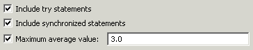
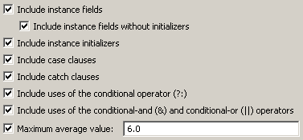

Metrics - Details - Complexity
This group contains metrics that measure the complexity of the code.
Average Block Depth
This audit rule finds methods and constructors that have too many
levels of nested blocks. A method with too many levels of nested blocks
can be difficult to understand.
Applicability
This metric can be computed for any method or method container.

Parameters
- Include try statements
- Determines whether try/catch/finally blocks are counted when
determining block depth.
- Include synchronized statements
- Determines whether synchronized blocks are counted when
determining block depth.
- Maximum average value
- Causes the metric to flag any projects, packages or types with too
great an average block depth.
Average Cyclomatic Complexity
This is the average of the cyclomatic complexity of each of the methods
defined in the target elements. The cyclomatic complexity of a single
method is a measure of the number of distinct paths of execution within
the method. It is measured by adding the one path for the method with
each of the paths created by conditional statements (such as "if" and
"for") and operators (such as ?:)..
Applicability
This metric can be computed for any method or method container.

Parameters
- Include instance fields in computation of complexity
- Determines whether instance fields are counted.
- Include instance fields without initializers in computation of complexity
- Determines whether instance fields without initializers are counted.
- Include instance initializers in computation of complexity
- Determines whether instance initializers are counted.
- Include catch clauses in computation of complexity
- Determines whether catch clauses are counted.
- Include uses of conditional operator (?:)
- Determines whether uses of the conditional operator are counted.
- Include uses of conditional-and (&) and conditional-or (||)
operators
- Determines whether uses of the conditional-and and conditional-or
are counted.
- Maximum average value
- Causes the metric to flag any projects, packages or types with too
much complexity per method.
Weigthed Methods
This is the sum of the cyclomatic complexity of each of the methods
defined in the target elements. The cyclomatic complexity of a single
method is a measure of the number of distinct paths of execution within
the method. It is measured by adding the one path for the method with
each of the paths created by conditional statements (such as "if" and
"for") and operators (such as ?:)..
Applicability
This metric can be computed for any method or method container.
|